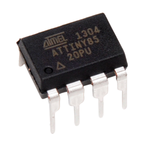
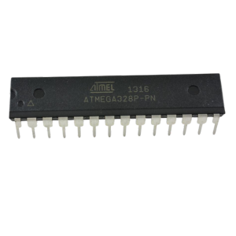
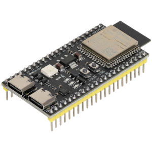

Resumen
Resumen
En esta práctica se evaluaron tres microcontroladores: un ESP32-C6, un Arduino Uno y un ATtiny83. Con estos dispositivos se realizaron pruebas en cuatro modos distintos, utilizando diferentes programas. Los modos probados fueron: el encendido de un LED, el parpadeo de un LED, el encendido de un LED mediante un botón, y el encendido de un LED mediante un botón utilizando la estructura condicional if.
Resumen
Introducción
Los microcontroladores son componentes electrónicos fundamentales en el desarrollo de proyectos de electrónica y sistemas embebidos. Son pequeños dispositivos con una unidad central de procesamiento (CPU), memoria y periféricos, que permiten controlar y automatizar tareas. En esta práctica, se utilizaron tres microcontroladores: el ESP32-C6, el Arduino Uno y el ATtiny83. Cada uno de estos microcontroladores ofrece características y capacidades distintas que los hacen adecuados para diferentes aplicaciones. La siguiente tabla muestra más información sobre cada microcontrolador.
Tabla comparativa
| Attiny  | ATTMega
 |
ESP32
 |
|
|---|---|---|---|
| Arquitectura | AVR | AVR | Xtensa (32-bit) |
| Frecuencia Max | 8 MHz - 20 MHz | 8 MHz - 20 MHz | 240 MHz |
| Memoria flash | 8 KB - 32 KB | 8 KB - 256 KB | 4 MB (varía) |
| GPIO | 6 - 23 | 23 - 54 | 34 - 48 |
| ADC | 6 - 10 | 6 - 16 | 12 |
| PWM | Sí | Sí | Sí |
| UART | 1 - 2 | 1 - 4 | 2 - 3 |
| I2C | 1 | 1 - 2 | 2 |
| Voltaje | 1.8V - 5.5V | 2.7V - 5.5V | 3.3V |
| Precio | Bajo | Bajo - Medio | Medio - Alto |
Wokwi es una plataforma en línea que se ocupó para simular circuitos y programar microcontroladores de forma visual e interactiva. Wokwi facilita el aprendizaje y la experimentación sin la necesidad de hardware físico. Para programar estos microcontroladores físicamente, se utilizó Arduino IDE, un programa de desarrollo integrado ampliamente utilizado que permite escribir, compilar y cargar código en microcontroladores de la familia Arduino y otros compatibles.
Materiales
Materiales
| ESP3232C6 |
| Arduino |
| Attiny |
| Protoboard |
| Jumpers |
| Resistencia de 1k y 220 homs |
| Push button |
Desarrollo
Desarrollo
esta práctica, se simuló primero cada código utilizando la plataforma Wokwi. Se configuraron y simularon los circuitos con los microcontroladores ESP32-C6, Arduino Uno y ATtiny83, donde se probaron diferentes modos como el encendido y parpadeo de un LED, y el encendido de un LED con un botón. Tras la validación en Wokwi, se pasó a la implementación física utilizando el Arduino IDE, cargando los mismos códigos en los microcontroladores reales y conectando los componentes necesarios, como LEDs y botones
Simulación
Simulación en WOWKY
A continuación, se muestran las simulaciones de cada ejercicio.
Prender un led.
Esp32C6:
ATMega:
Attiny:
Led parpadeo.
Esp32C6:
Arduino:
Attiny:
Boton
Esp32C6:
ATMega:
Attiny:
Boton if
Esp32C6:
ATMega:
Attiny:
Diseño
Diseño
El diseño del proyecto se centró en crear un circuito simple pero funcional. La elección de los componentes se realizó considerando las capacidades de cada microcontrolador (ESP32-C6, Arduino Uno, ATtiny83) y la facilidad de conexión y programación.
Construcción
Construcción
Se construyeron tres circuitos utilizando los microcontroladores ESP32-C6, Arduino Uno y ATtiny83. El primer circuito encendió un LED de forma permanente, el segundo implementó su parpadeo con delay(), el tercero usó un botón para controlar el LED el cuarto igual uso un botón para encender un led pero con una estructura if. Los componentes se conectaron en una placa de pruebas y se cargó el código en el microcontrolador mediante el Arduino IDE, verificando su funcionamiento y realizando ajustes según fuera necesario.
Resultados
Resultados
Estos son los videos de cada uno de los códigos.
Prender un led
ESP32:
ATMega:
Attiny:
Led parpadeo
ESP32:
ATMega:
Attiny:
Botón
ESP32:
ATMega:
Attiny:
Botón if
ESP32:
ATMega:
Attiny:
Resumen
Resumen
la práctica permitió comprender cómo interactúan los microcontroladores con componentes básicos como LEDs y botones, tanto en simulaciones como en implementaciones físicas. La simulación en Wokwi proporcionó una forma segura y eficiente de probar el código antes de la construcción física, lo que facilitó la detección temprana de errores. Al implementar los circuitos en hardware real, se verificó el correcto funcionamiento de cada uno, desde el encendido y parpadeo del LED hasta el control del LED con un botón mediante una estructura if.